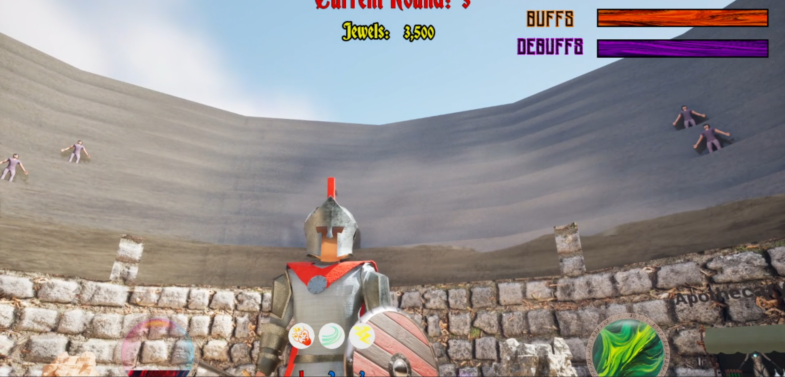
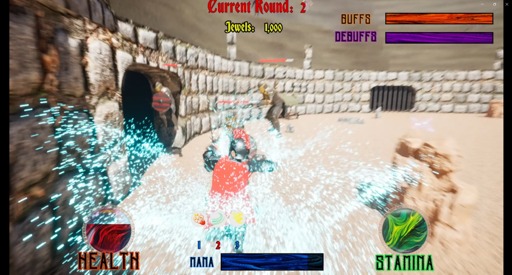
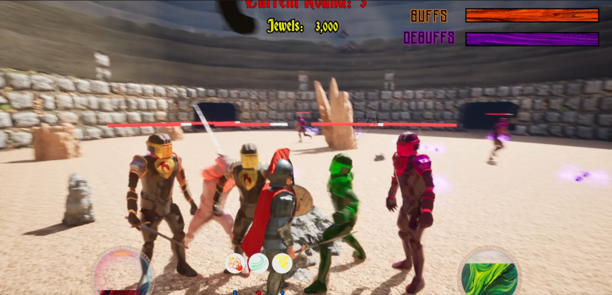
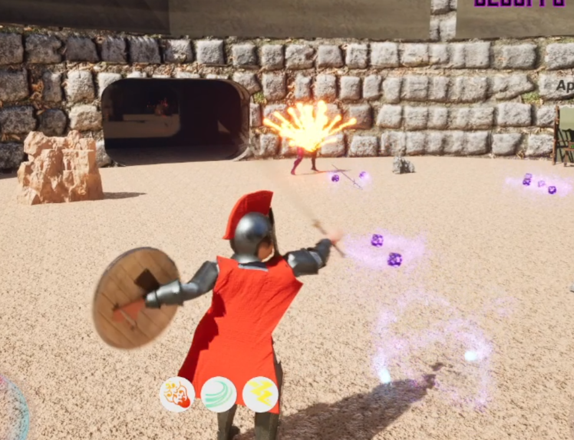
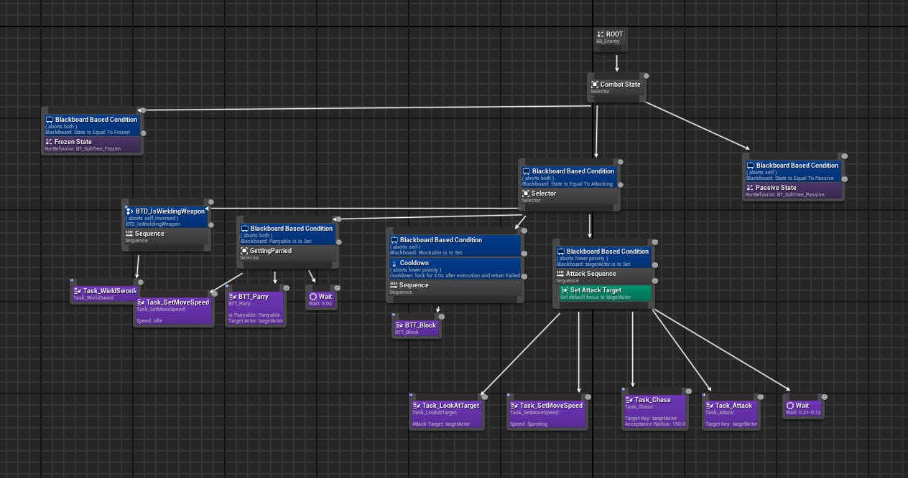
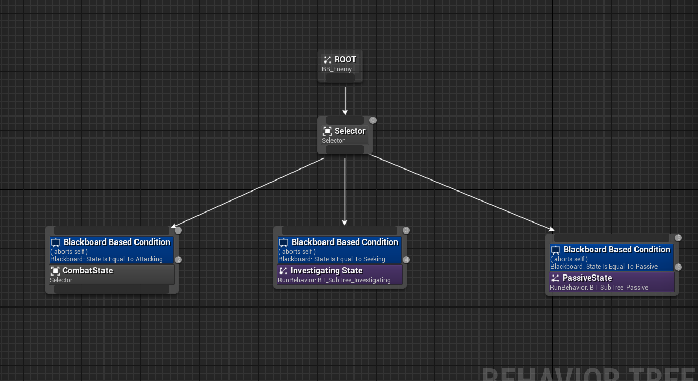
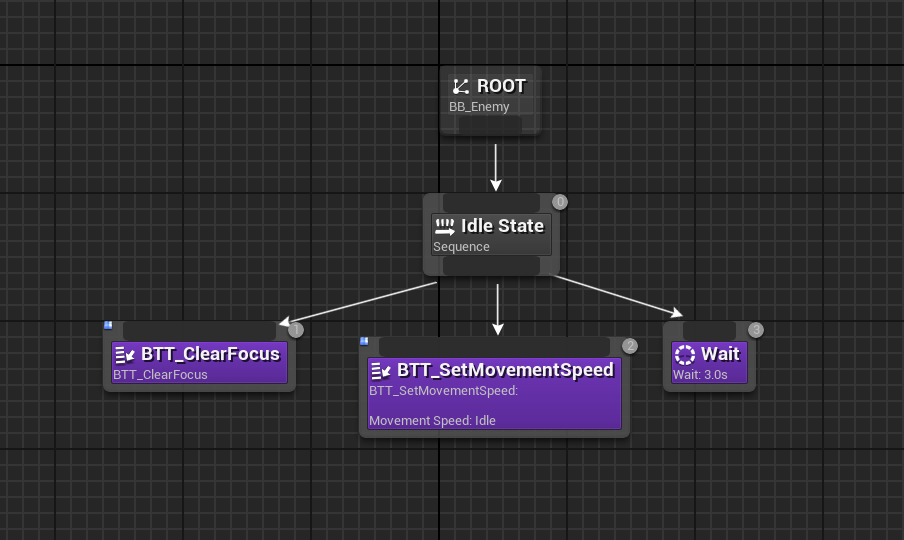
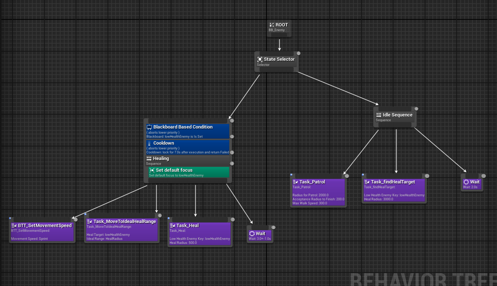
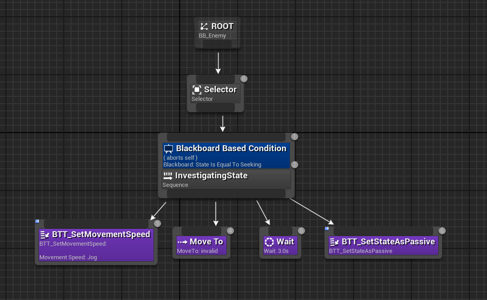

Designing Intelligent AI Enemies: From Concept to Engaging Combat
This demo showcases the designed enemy behaviors in action: the Berserker's relentless aggression, the Warrior's tactical defense, and the Cleric's supportive healing - all working together to create strategic, engaging combat encounters.
Creating Blood and Sand's AI combat system was about solving a core design challenge: How do you make AI enemies that feel intelligent, distinct, and fun to fight? My approach focused on giving each enemy archetype a unique personality through their combat behaviors, creating a rock-paper-scissors dynamic that keeps players engaged and thinking tactically.
Each enemy needed to feel like a different opponent, not just a stat variation
Players should need different strategies for each enemy type
Enemies should complement each other when fighting together
Combat should feel visceral, strategic, and rewarding

The 3.5km combat arena where all AI behaviors come together

Multi-enemy Encounter

Tactical Positioning

Dynamic Combat Flow
Player Character
Each enemy type was designed to solve a specific gameplay problem and create unique tactical challenges
Create constant pressure that forces players to stay mobile and think quickly under stress.
"The Berserker teaches players to maintain distance and timing"
Create a methodical opponent that rewards patient, strategic play over button mashing.
"The Warrior forces players to learn patience and timing"
Add a priority target that changes the entire flow of multi-enemy encounters.
"The Cleric creates tactical depth in group encounters"
My approach to behavior testing focused on validating that each behavior tree executes correctly, produces consistent results, and handles edge cases appropriately.
Test Case: Can See Player? → Chase → Attack → Repeat
Validated that simple aggression loop executes consistently without breaks or unexpected pauses across all combat scenarios.


Combat Sub-tree

Movement Sub-tree
Testing a multi-component AI system required validating that all components work together correctly and communicate as intended.
AI Controller (Integration Tested)
├── Perception Component ✓
├── Behavior Tree Component ✓
├── Combat Component ✓
└── Movement Component ✓
Validated Cleric communication with allies for healing prioritization and confirmed Warriors correctly call for backup under appropriate conditions.


Decision Making Sub-tree
Performance testing validated that the system maintains 60+ FPS even under stress conditions with multiple concurrent AI agents and complex calculations.
Tested AI timing, attack telegraphs, and visual feedback to confirm combat feels responsive and fair. Validated that players can distinguish between earned victories and unfair defeats.
Before and after polish passes - notice the improved visual clarity and spacing
Beyond technical validation, testing needed to confirm combat creates the intended player experience. User experience testing validated that emotional and gameplay goals were met.
Tested hit feedback timing and visual/audio cues to confirm every attack feels weighty and consequential. Validated player satisfaction through repeated playtesting.
Confirmed through testing that players discover optimal strategies organically. Verified the "aha!" moment when targeting priority (Cleric first) becomes clear.
Tested encounter progression from single enemies to coordinated groups. Confirmed difficulty curve creates mounting tension without frustration.
Verified AI behaviors create fair challenge. Testing confirmed players attribute victories to skill and defeats to strategic mistakes, not unfair mechanics.
The Berserker's straightforward aggression still needed extensive testing. Simple doesn't mean edge cases don't exist—validation confirmed consistency across all scenarios.
Validating AI timing against human reaction patterns was critical. Testing revealed that frame-perfect AI creates frustration—balance testing ensured fairness.
Individual behaviors that passed solo testing showed edge cases in multi-enemy scenarios. Integration testing was essential to catch group coordination bugs.
Performance benchmarking couldn't be deferred—it was tested throughout. Stress testing with 20+ agents validated optimization maintained smooth gameplay.
I'd love to talk about the specific design challenges, architectural decisions, and lessons learned from building this AI combat system. Every project teaches something new about creating engaging, intelligent opponents.